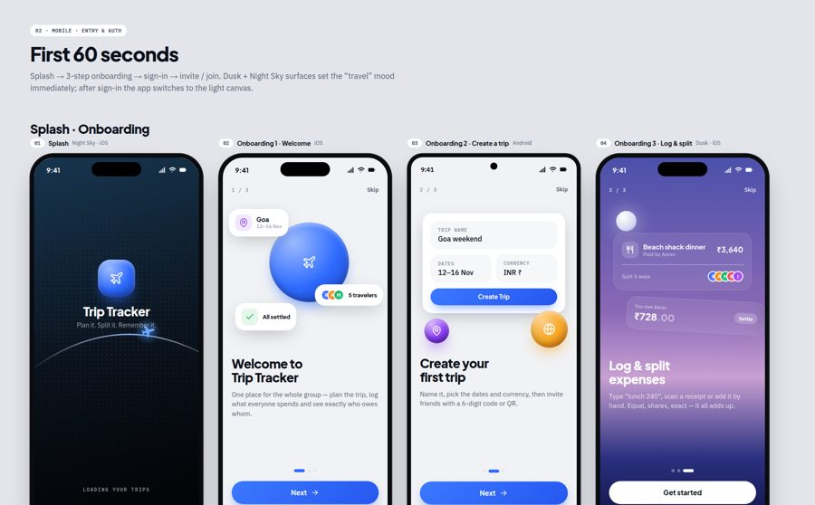
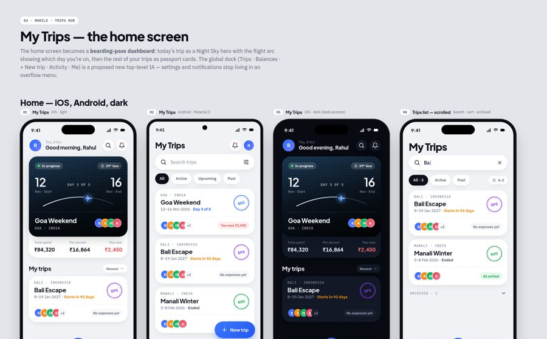
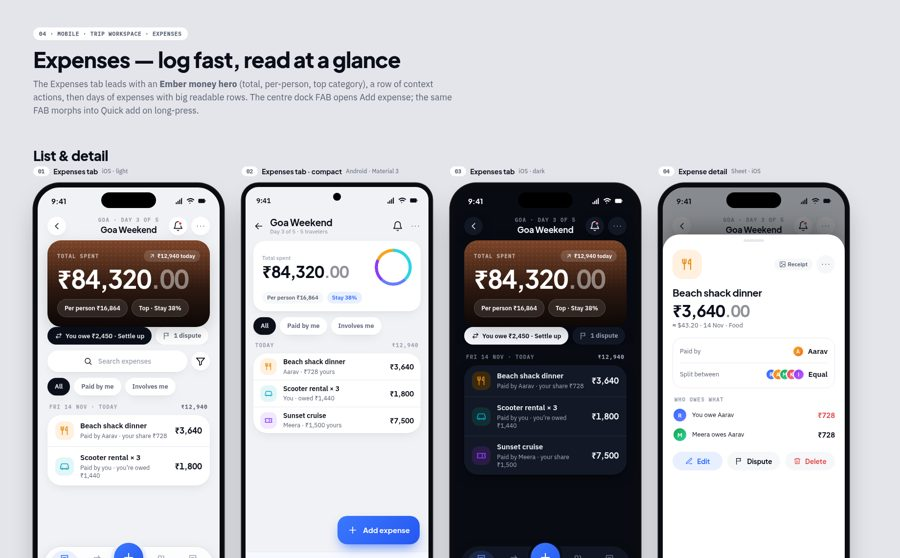
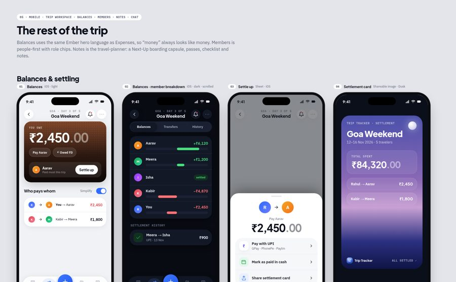
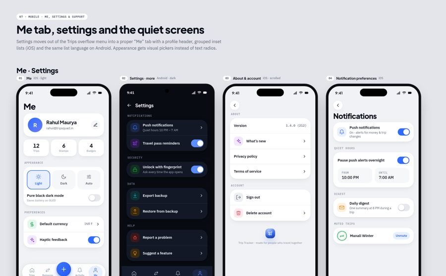
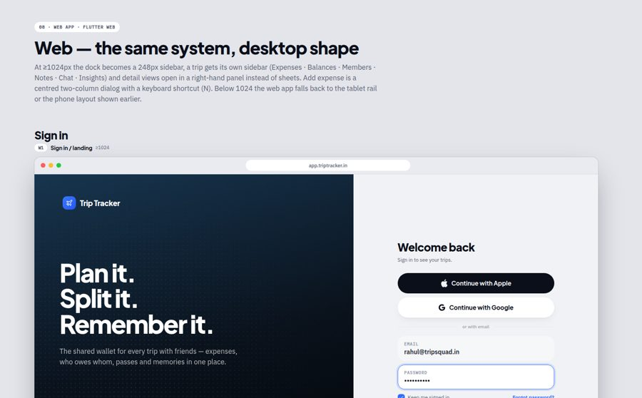

02 · Auth and onboarding16 screens: splash, onboarding, sign in, create account, reset, join code, invite, public link, lock, push prompt.

03 · Trips hub12 screens: home on iOS, Android and dark, search, empty, offline, create trip, share, activity, global balances.

04 · Expenses14 screens: list, detail, add expense, splits, quick add, filters, receipts, insights, conflicts, recycle bin.

05 · Trip tabs15 screens: balances, settle up, close-out, members, notes and passes, checklist, chat, trip settings, categories.

07 · Me and settings10 screens: profile, settings, notifications, report a problem, suggest a feature, diagnostics, delete account, legal.

08 · Web app9 desktop screens: sign in, dashboard, expenses table with detail panel, add dialog, balances, planner, insights, settings, public page.